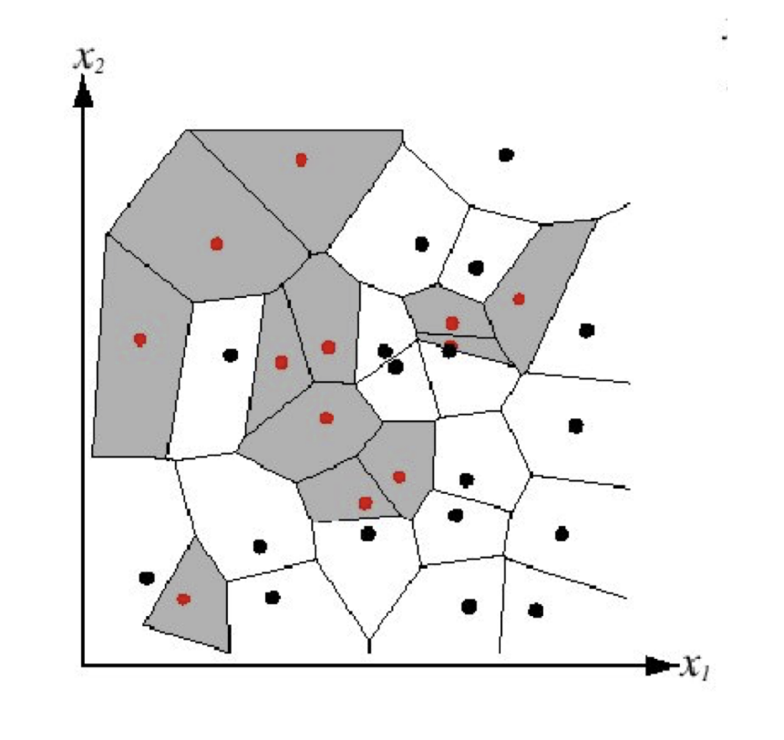
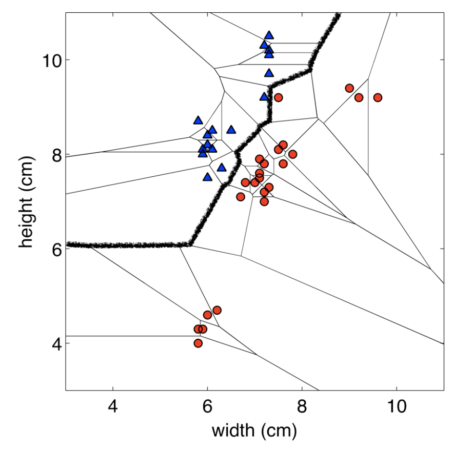
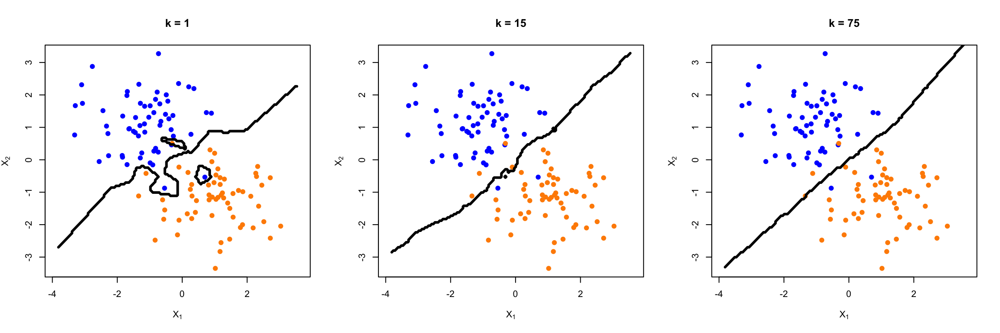

k-Nearest Neighbours, Linear Regression, and Model Assessment/Selection
Week 2
Review from Last Week
Machine learning is the science of learning patterns from data.
We introduced three types of machine learning problems:
- Supervised Learning
- Unsupervised Learning
- Reinforcement Learning
The main focus of this course is supervised learning, where we are given
- Training Set \({(x_1, y_1), ..., (x_n, y_n)}\) consisting of \(n\) samples of
- features \(x_1, ..., x_n \in X\) and corresponding
- outcome \(y_1, ..., y_n \in Y\)
and the goal is to to estimate (or learn) the function \(f: X \rightarrow Y\) based on \(D^{train}\).
Review from Last Week
We discussed two approaches of estimating \(f\) based on \(D^{train}\):
- Parametric method (assume a distribution)
- Example: assuming a linear model
- Non-parametric method (data-driven)
- Example: k-nearest neighbours
When choosing a model, \(\hat{f}\), we need to keep in mind the bias-variance tradeoff
- the balance between a model being too simple (high bias) and too complex (high variance)
Review from Last Week
When deciding on the best model, we can use a metric such as the test MSE (regression problems) or the test error rate (classification problems)
- it is important to evaluate model performance using the test data, since the training MSE (or error rate) will always prefer a more complex model
In summary, different \(\hat{f}\) are simply different algorithms/methods/predictors
- we will spend this course going over many different ways to estimate \(f\)
- there is no one best method
Learning Outcomes for This Week
- kNN
- linear regression
- cross validation
k-Nearest Neighbours (kNN)
Motivating Example
Machine learning is a great tool to use to help with clinical decision making/health system planning.
One example would be to use supervised learning to predict which older patients are most likely to benefit from rehabilitation
- Doing so would result in more efficient use of health care resources, reduction in costs, and improved quality of life for the patient
Let \(\mathbf{x_i}\) be a set of covariates for patient \(i = 1,...,n\). Let \(y_i\) be the binary outcome, where \(y_i=1\) indicates that the patient has rehabilitation potential.
Motivating Question: For a new patient that comes into the clinic, how can we predict if they would benefit from at-home rehabilitation?
Zhu, M., Chen, W., Hirdes, J. P., & Stolee, P. (2007). The K-nearest neighbor algorithm predicted rehabilitation potential better than current Clinical Assessment Protocol. Journal of clinical epidemiology, 60(10), 1015-1021.
A Classical Local Approach: Nearest Neighbours
- Consider a classification problem (for now)
- Suppose we are given a new feature vector, \(\mathbf{x^*} \in \mathbb{R}^p\)
- The idea here is the find the nearest feature vector to \(\mathbf{x}\) in the training set, and use its label to predict \(y^*\)
There are many ways that we can define nearest, but for now we will use the Euclidean distance, i.e.
\[||\mathbf{x_i}-\mathbf{x_{i'}}||_2 = \sqrt{\sum_{j=1}^p (x_{ij} - x_{i'j})^2}\]
A Classical Local Approach: Nearest Neighbours
Algorithm: 1-NN
Find example \((\mathbf{x}, y)\) (from the training data) closest to \(\mathbf{x^*}\). That is: \[\mathbf{x} = \underset{\mathbf{x_i} \in \{\mathbf{x_1}, ..., \mathbf{x_n}\}}{\arg\min} \text{distance}(\mathbf{x_i}, \mathbf{x^*})\]
Output \(y\) as the label.
A Classical Local Approach: Nearest Neighbours
We can visualize the behaviour in the classification setting using a Voronoi diagram.
This diagram is a way to divide a space into different regions based on the distance to specific points, thus it’s a good way to visualize what the outcome label of a new point, \(\mathbf{x^*}\) would be.

Nearest Neighbours: Decision Boundaries
Decision Boundary: the boundary between regions of the feature space assigned to different categories

Nearest Neighbours
Going back to our motivating example, what does this algorithm look like?
What are some issues that arise?
Let’s Generalize: k-Nearest Neighbours
Instead of just using the nearest neighbour, we will use the k-nearest neighbours.
Algorithm: k-NN
- Find \(k\) data points \((\mathbf{x_{(1)}}, y_{(1)}), ..., (\mathbf{x_{(k)}}, y_{(k)})\) (from the training data) closest to \(\mathbf{x^*}\). These points are ordered by which are closest to \(\mathbf{x^*}\). These points form a neighbourhood, \(N_k(\mathbf{x})\).
2a. The prediction for a classification problem is majority class among the \(k\) neighbours
\[ \hat{y}^* = \underset{y \in \mathcal{C}}{\arg\max} \sum_{i=1}^{k} \mathbf{1}\{y = y_{(i)}\}, \] where \(\mathcal{C}\) is the set of possible classes.
2b. The prediction for a regression problem is the average response among the \(k\) neighbours
\[ \hat{y}^* = \frac{1}{k}\sum_{i=1}^{k} y_{(i)}. \]
Toy Example: kNN
Suppose we observe a new point, \[ \mathbf{x}^* = (0.5, 0) \]
Let’s use \(k=5\) to predict its class, \(y^*\).
Effect of \(k\) on the Decision Boundary

Tradeoffs in Choosing \(k\)
Small \(k\)
- More flexible decision boundary, but high variance
- Question: what does high variance mean when we’re talking about \(\hat{f}\)?
- Overfitting: sensitive to random noise in the training data
Large \(k\)
- Less flexible decision boundary and smaller variance
- Underfitting: fail to capture the true decision boundary
Tradeoffs in Choosing \(k\)
Balancing \(k\)
- Optimal choice of \(k\) depends on number of data points, \(n\)
- Nice theoretical properties if
\[k \rightarrow \infty, \quad \text{and} \quad \frac{k}{n} \rightarrow 0\] Rule of Thumb: Choose \(k\) from $[1, ] via cross-validation (next lecture!)
Pitfalls: The Curse of Dimensionality
As we discussed last week, kNN suffers from the curse of dimensionality!
- In high dimensions, “most” points are approximately the same distance because they are far away from each other
- e.g. Motivating example
The saving grade is that some datasets (e.g. images) may have low intrinsic dimension
- This means that high dimensional data may rely on a much smaller number of true independent variables than the space may suggest
- i.e. The true \(f\) does not use all features available
Pitfalls: Normalization
kNN can be sensitive to the ranges of different features
- e.g. Motivating example: age (50+) vs. indicator variable representing whether the patient can bathe on their own (0 or 1)
:::{.fragment} A simple fix: standardize each dimension to be zero mean and unit variance.
Caution: depending on the problem, the scale might be important! :::
Pitfalls: Computational Cost
Computational cost for classifying test data, per data point (un-modified algorithm)
- Calculate p-dimensional Euclidean distances with \(n\) data points: O(\(np\)) (computation time increases linearly with n and with p)
- Sort the distances: O(\(n \log n\)) (computation time between linear and quadratic)
- This must be done for each test data point, which is very expensive by the standards of a learning algorithm!
- Need to store the entire dataset in memory!
- Tons of work has gone into algorithms and data structures for efficient nearest neighbors with high dimensions and/or large datasets.
Note on Other Distance Measures
Depending on the type of dataset, different distance measures will perform better than others.
These distance measures may differ in:
- their sensitivity to large differences in feature values
- their ability to handle non-continuous features
- their ability to perform well in sparse feature environments
- etc.
Knowledge Check
Linear Regression: A Review
Linear Regression
Although simple, and may seem a bit dull compared to other more sophisticated techniques, linear regression remains to be a very useful and widely used statistical learning method.
It is the foundation of a lot of new approaches as well.
Linear Regression
Let \(Y \in \mathbb{R}\) be the outcome and \(X \in \mathbb{R}^p\) be the (random) vector of \(p\) features.
The linear model assumes:
\[ \begin{aligned} Y &= f(X) + \epsilon \\ &= \beta_0 + \beta_1X_1 + ... + \beta_pX_p + \epsilon \end{aligned} \] where
- \(\beta_0, \beta_1, ..., \beta_p\) are unknown constants
- \(\beta_0\) is called the intercept
- \(\beta_j\), for \(1 \leq j \leq p\), are the coefficients of the \(p\) features
- \(\epsilon\) is the error term satisfying \(\mathbb{E}[\epsilon]=0\)
Linear Predictor under the Linear Regression Model
If we can estimate the unknown coefficients \(\beta_0, \ldots, \beta_p\), then we can use the fitted model to predict the response for a new observation \(\mathbf{x}^* = (x_1^*, \ldots, x_p^*)\):
\[ \hat{f}(\mathbf{x}^*) = \hat{\beta}_0 + \hat{\beta}_1 x_1^* + \cdots + \hat{\beta}_p x_p^*. \] :::{.fragment} Question: How do we estimate \(\hat{\beta}_0, \ldots, \hat{\beta}_p\)? :::
Ordinary Least Squares (OLS) Approach
To approximate \(\beta_0, ..., \beta_p\), we can use Ordinary Least Squares (OLS).
In the model fitting step, we use the training data, \(D^{train}\) to choose \(\beta_0, ..., \beta_p\) such that they minimize the mean of the squared residuals:
\[ \begin{aligned} (\hat{\beta}_0, \ldots, \hat{\beta}_p) &= \underset{\alpha_0, \ldots, \alpha_p}{\arg\min} \frac{1}{n}\sum_{i=1}^n \left( y_i - \left[\alpha_0 + \alpha_1x_{i1} + \cdots + \alpha_px_{ip}\right] \right)^2. \end{aligned} \]
Once we have estimated the coefficients, our fitted model is
\[ \hat{f}(\mathbf{x}) = \hat{\beta}_0 + \hat{\beta}_1 x_1 + \cdots + \hat{\beta}_p x_p. \]
Linear Regression
Question: What is the interpretation of \(\beta_0\)?
Question: What is the interpretation of one of the coefficients, say, \(\beta_1\)?
In Matrix Form
Using matrix notation,
\(\hat{\boldsymbol{\beta}} = [\hat{\beta}_0, \ldots, \hat{\beta}_p]^\intercal \in \mathbb{R}^{p+1}\), \(\boldsymbol{\alpha} = [\alpha_0, \ldots, \alpha_p]^\intercal \in \mathbb{R}^{p+1}\),
\(\mathbf{y} = [y_1, \ldots, y_n]^\intercal \in \mathbb{R}^n\), \(\mathbf{X} = [\mathbf{x}_1, \ldots, \mathbf{x}_n]^\intercal \in \mathbb{R}^{n \times (p+1)}\), with
\[ \mathbf{x}_i = [1, x_{i1}, \ldots, x_{ip}]^\intercal \in \mathbb{R}^{p+1}, \qquad 1 \leq i \leq n. \]
The OLS estimator of \(\boldsymbol{\beta}\) is defined as
\[ \begin{aligned} \hat{\boldsymbol{\beta}} &= \underset{\boldsymbol{\alpha} \in \mathbb{R}^{p+1}}{\arg\min} \frac{1}{n} \sum_{i=1}^n \left(y_i - \mathbf{x}_i^\intercal \boldsymbol{\alpha}\right)^2 \\[0.5em] &= \underset{\boldsymbol{\alpha} \in \mathbb{R}^{p+1}}{\arg\min} \frac{1}{n} \left\| \mathbf{y} - \mathbf{X}\boldsymbol{\alpha} \right\|_2^2. \end{aligned} \]
Some Comments
- We use the test MSE to evaluate the performance of a model, but the idea of estimating \(f\) by minimizing the training MSE can be applied to (almost) all supervised learning problems.
Specifically,
\[\hat{f} = \underset{g \in \mathcal{F}}{\arg\min} \frac{1}{n} \sum_{i=1}^n L(y_i, g(\mathbf{x_i}))\] where \(L(.)\) is a loss function and \(\mathcal{F}\) is a class of choices for the function, \(g\).
- The OLS approach corresponds to \(L(a,b) = (a-b)^2\) and
\[\mathcal{F} = \{\mathbf{x} \mapsto \mathbf{x}^{\intercal}\mathbf{\beta} : \mathbf{\beta} \in \mathbb{R}^{p+1}\}\]
Some Comments
- In general, the difficulty of solving \[\hat{f} = \underset{g \in \mathcal{F}}{\arg\min} \frac{1}{n} \sum_{i=1}^n L(y_i, g(\mathbf{x_i}))\] varies across problems, but the OLS approach admits a closed-form solution:
\[\hat{\mathbf{\beta}} = (\mathbf{X}^{\intercal}\mathbf{X})^{-1}\mathbf{X}^{\intercal}\mathbf{y}\] whenever \(\mathbf{X} \in \mathbb{R}^{n \times (p+1)}\) has full column rank.
What is Random?
The true parameters \(\boldsymbol{\beta}\) are fixed but unknown.
The training data
\[ (\mathbf{X}_1,Y_1),\ldots,(\mathbf{X}_n,Y_n) \]
are random observations from the population.
Since \(\hat{\boldsymbol{\beta}}\) is calculated from the training data,
\[ \boxed{\hat{\boldsymbol{\beta}} \text{ is also random.}} \]
If we collected a different training sample, we would generally obtain a different \(\hat{\boldsymbol{\beta}}\).
The Randomness in the Coefficients

Properties of the OLS Estimator
Recall that
\[ \hat{\boldsymbol{\beta}} = (\mathbf{X}^{\intercal}\mathbf{X})^{-1} \mathbf{X}^{\intercal}\mathbf{y}. \]
Assuming the linear model is correctly specified,
Unbiasedness
\[ \mathbb{E}[\hat{\boldsymbol{\beta}}] = \boldsymbol{\beta}. \]
On average, OLS estimates the true coefficients correctly.
Variance
\[ \operatorname{Cov}(\hat{\boldsymbol{\beta}}) = \sigma^2 (\mathbf{X}^{\intercal}\mathbf{X})^{-1}. \]
Different training samples produce different estimates of \(\boldsymbol{\beta}\).
Important Considerations
Estimation of \(\mathbf{\beta}\)
- How close is the point estimation \(\hat{\mathbf{\beta}}\) to the true \(\hat{\mathbf{\beta}}\)
- (Inference) Can we provide confidence intervals and conduct hypothesis testing of \(\hat{\mathbf{\beta}}\)?
Prediction of \(Y\) at \(X^* = \mathbf{x^*}\)
- How accurate is the point prediction \(\hat{f}(\mathbf{x^*}) = \mathbf{x^*}^{\intercal}\hat{\mathbf{\beta}}\)?
- (Inference) Can we further provide prediction intervals of \(Y\)?
Variable (Model) Selection
- Do all predictors help to explain \(Y\), or is there only a subset of the predictors that are useful? (we will discuss this later!)